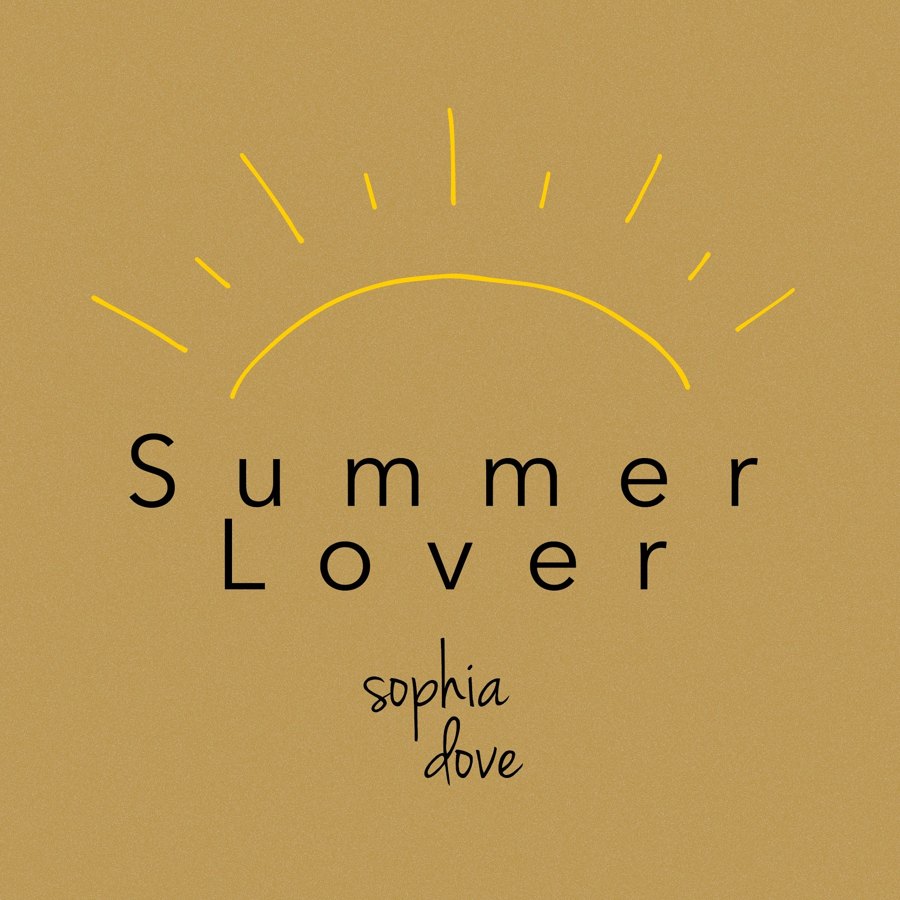

Growing up with two copyeditors for parents, writing has always been an integral part of my life. I helped revive the creative writing club in my high school, and I’ve contributed to multiple school publications throughout my academic career, including yearbooks, news magazines, and literary magazines. I have experience with creative, professional, academic, and journalistic writing styles, and am well-versed in MLA, APA, and AP formatting. My favorite things to write include poetry, music reviews, and blog posts.
Samples:
Artist Profile: Imogen Heap
In this essay, I reflect on the innovative career of musician Imogen Heap. Originally written for my History of Electronics in Music class in fall 2020, it’s 765 words in length.
Album Review: Taylor Swift's reputation
In this review, I analyze Taylor Swift’s sixth studio album, reputation. Originally written for my History of Electronics in Music class in fall 2020, it’s 800 words in length.
Blog Post: How to Release Music as a DIY Musician
In this blog post, I outline the basics of what independent musicians should know before releasing their first song. Originally posted to my music website, sophiadove.com, it’s 4,500 words in length.
Designer
Experience:
I’ve worked as a media consultant at RCAH’s Language and Media Center since 2018. While I excel in Adobe Illustrator, I also have experience with Photoshop and InDesign. My work has been featured in various print and digital promotional materials, and I also design my own album art.
Samples:
Community Participatory Research in Costa Rica
RCAH's Language and Media Center, 2021
'A World of Our Own' album cover
C O ZY, 2020
Hindsight part 3: 'Campus'
RCAH's Language and Media Center, 2020
Musician
Experience:
I’ve been writing songs since I was eight years old. At fourteen, I won a local singing competition, Farmington Idol, that launched my professional career. I busked outside of local businesses from 2014 through 2019, performing at the Farmington Farmer’s Market, Rhythms in Riley Park, the Farmington Civic Theatre, and the Farmington Player’s Barn along the way. I’ve performed alongside artists such as Adiran + Meredith, Matt Watroba, Allie Aro, and Emily Nott.
In 2019, I started releasing some of my original music to streaming services as Sophia Dove, and have accumulated hundreds of streams across platforms since then. My work has been featured in RCAH’s Spring 2020 Graduation Celebration as well as RCAH’s Fall 2020 Virtual Homecoming. I write, perform, record, produce, mix, master, and distribute all of my own work.
Samples:
Princess of Social Distance
2020
Love Song to My Friends
2020

Summer Lover
2019
Listen to more here:
About Me
Based in Metro Detroit and East Lansing, I’m currently a senior at Michigan State University, earning a bachelor’s degree in Arts and Humanities with a minor in Entrepreneurship and Innovation. I’m diligent, detail-oriented, and dedicated, and I can thrive in both independent and collaborative environments. I’m a passionate creator, and I put my everything into everything I make. If you’re interested in working together, reach out and we’ll make something incredible.